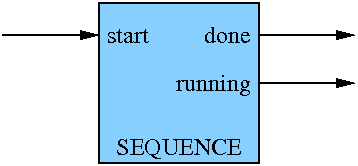
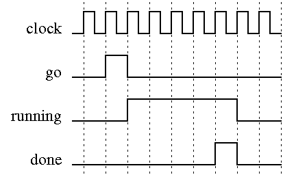
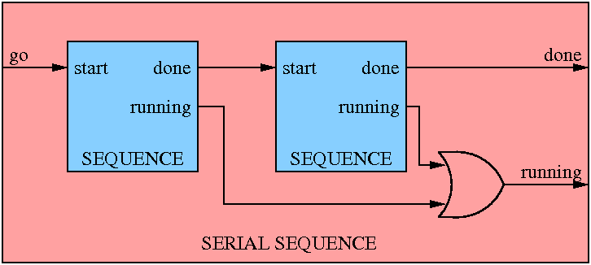
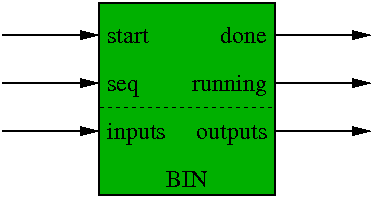
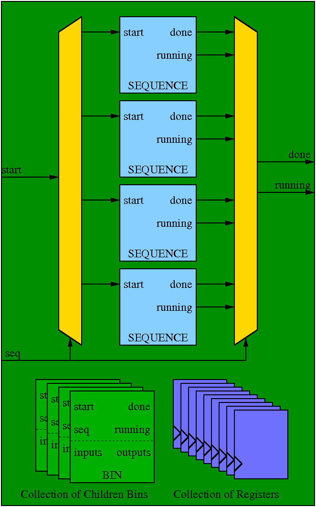
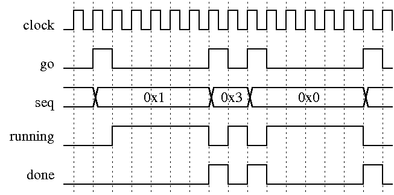

seq is a tool set that makes designing sequences and state machines in HDL easier. You plug together smaller pieces to form a hierarchical specification of the your design and then run a script that generates the HDL for you. So the simple procedure is as follows
The two basic abstractions that one must master to use seq are Sequences and Bins. With these two building blocks one can generate very complex logic designs easily via specification.
A Sequence is an object that performs operations. There are many different type of Sequences provided by this tool set that do operations like set registers, generate triggers, stall for a specified number of clock cycles, or sync to an external signals. Users can also write their own as necessary.
Sequences have a very simple control interface that allows them to be plugged into each other in any way desired. The control inferface of a Sequence is shown below:
The Sequence starts its operation when its receives a start one-shot pulse. After receiving the start signal, the Sequence will assert its running output high and will hold it high until the Sequence has executed to completion. Upon completion, the sequencer will issue a one-shot done pulse and drop the running output. The timing is shown below:
With this interface, Sequences can be connected to each other in many different forms to create new kinds of Sequences. For example, the Serial Sequence encapsulates two or more Sequences and executes its subsequences serially as shown below:
Parallel and multiplexing Sequences are built in a similar fashion.
A Bin corresponds to a HDL module and is characterized by the following:
From the control and timing perspective, a Bin is much like a Sequence, but it also includes a seq input which controls which sequence in the bin gets executed. The inputs and outputs are user defined. The inputs typically control member Sequences, such the desired stall count for a Stall Sequence or an external synchronization signal for a Sync Sequence. The outputs are typically the member registers that the member Sequences control. For example, a Bin may have a output register called addr that a CountUp Sequence advances whenever it is executed.
A more detailed look at a Bin is shown below. The collection of Sequences are addressable via the seq input. The start, running, and done control signals get demultiplexed/multiplexed onto the Sequence being selected. The member Sequences then implement the logic necessary to control the collection of children Bins and the collection of member registers.
An example timing for a Bin module is shown below:
The user only has to interface to the top-most Bin in the hierarchy. To execute member Bins inside a Bin, the user instantations a Child Sequence. The Child Sequence can be static, meaning it always executes the Sequences of the child Bin in the a static order, or it can be parameterized, meaning the user can provide the order and number of sequences to execute.
One will notice the slight difference in the timing of the done signal in the Sequence and Bin timing diagrams. The done signal out of a Bin is by default registered, which delays the done signal one clock cycle. The user can select an option that prevents the done from being registered when instantiating the Bin. If the done signal is registered, the user can hook the done signal directly up to the start signal to get a loop (you still need to logically or in an initial start pulse). When done is not registered, one can build up large combinational blocks, so for timing reasons, one may want to register the done signal. There is, of course, a latency build up that occurs for each level of the hierarchy that registers the done signal.